GitHub Copilot Anywhere: From Remote Control CLIs to Cloud Sandboxes
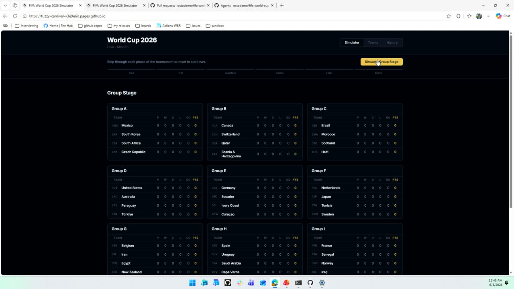
Official description
Modern development no longer happens in one place. You might start in your terminal, step away, and pick things back up from another device or let work continue in the cloud. This session explores using GitHub Copilot across environments, from local CLI sessions to full cloud execution with Remote Sandboxes. See how Copilot runs commands, iterates on changes, and continues work without losing context, while you stay in control. Seating for this session is first-come, first-served. Add it to your schedule to plan your day and arrive early to secure a spot.
Summary
Overview
This session demonstrates how GitHub Copilot can operate across multiple environments and devices, introducing two complementary execution models: remote control sessions that extend a local Copilot session to mobile and web, and cloud sandboxes that give Copilot its own isolated, persistent cloud machine. Through a live World Cup simulation app, the presenters show steering, iterating, and continuing Copilot work without losing context.
Key announcements
- Cloud Sandboxing for GitHub Copilot in public preview (~00:10:38m05sm10sp05s
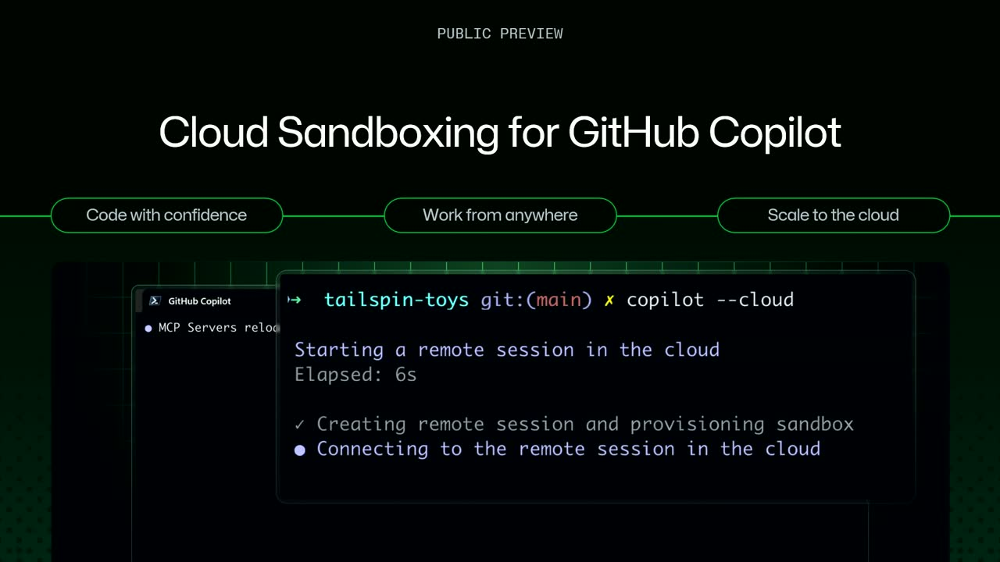
p10s) — Every Copilot session using a cloud sandbox runs in its own isolated cloud environment, with the host machine becoming optional and work persisting even if the local laptop disconnects or shuts down. - Remote control sessions for Copilot (~00:02:00
 m05s
m05s m10s
m10s p05s
p05s p10s) — Lets users take a local Copilot session on the go via github.com or the GitHub mobile app, steering and monitoring it in real time across the CLI, the new Copilot desktop app, VS Code, and JetBrains.
p10s) — Lets users take a local Copilot session on the go via github.com or the GitHub mobile app, steering and monitoring it in real time across the CLI, the new Copilot desktop app, VS Code, and JetBrains. - Chronicle session history feature (~00:19:46
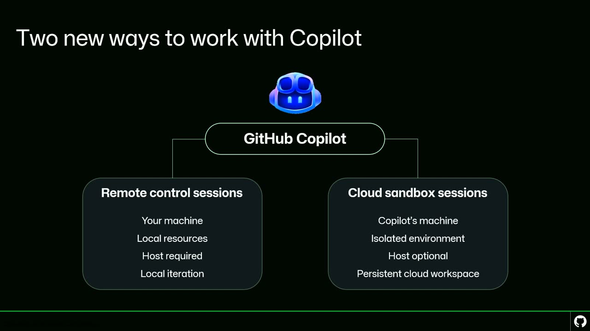
m05s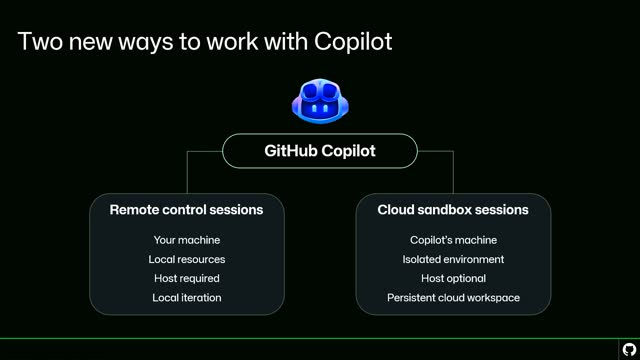
m10s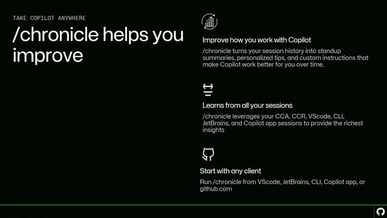
p05s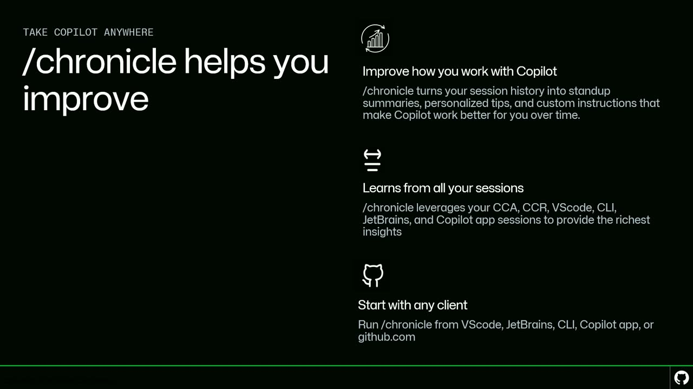
p10s) — Indexes all of a user's Copilot sessions across clients to provide queryable, actionable guidance such as tips, stand-up reports, custom instruction improvements, and cost/token usage reduction.
{kind=link}
{kind=link}
{kind=link}
{kind=link}
{kind=link}
{kind=link}
{kind=link}
{kind=link}
Topics covered
- Enabling and using remote control:
remote on,remote off,remote show, QR-code/link handoff (Control+E), andkeep alive on. - Permission and visibility model for remote sessions (private to the user by default, optionally shareable with repo collaborators).
- Default-on configuration via settings (
remote sessions true) and enterprise admin policies (remote control set to "view and control"). - Compatibility with GitHub repos, Azure DevOps (ADO) repos, and CLI sessions without a repository.
- Launching a cloud sandbox with the
--cloudflag and provisioning an isolated environment. - Cloud agent policies: firewall rules, recommended allowances, and custom allowances scoped to a repository.
- Sandbox lifecycle: implicit snapshots of process and disk, compute scaling to zero when idle, and resuming from snapshot on follow-up.
- Comparison of remote control (local resources, host required) versus cloud sandbox (isolated environment, host optional, persistent workspace).
- Running Chronicle via
/chronicleacross CLI, desktop app, VS Code, JetBrains, and github.com.
Notable quotes
"If I throw my laptop off the balcony, it will still work. Copilot still gets to go." — Denizhan Yigitbas
"Some of us are ultra agent maxors, right? We want thirty of our agents working at the same time, but our apps might be heavy and our local resources just might not be enough." — Denizhan Yigitbas
"Every session that you run with Copilot builds a history that you can query." — Ellie Bennett
Products and tools mentioned
- GitHub Copilot
- GitHub Copilot CLI
- GitHub Copilot desktop app
- Copilot in VS Code
- Copilot in JetBrains
- GitHub Copilot Cloud Agent
- GitHub Copilot code review
- GitHub mobile app
- github.com
- Azure DevOps (ADO)
- Cloud Sandboxes
- Chronicle
Speakers featured
- Ellie Bennett — presenter, GitHub Copilot
- Denizhan Yigitbas — presenter, GitHub Copilot
Frames
{kind=link}
{kind=link}
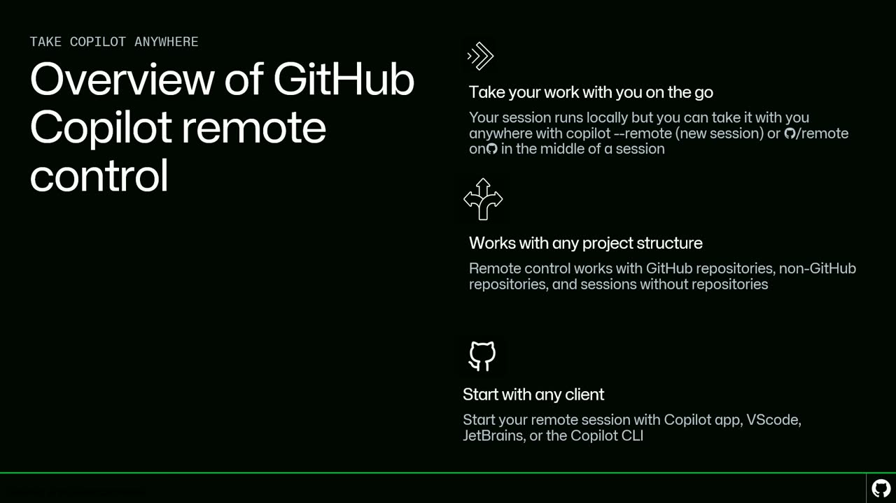
{kind=link}
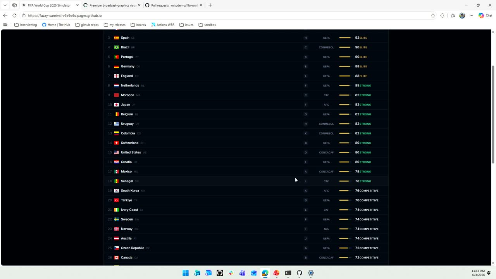
{kind=link}
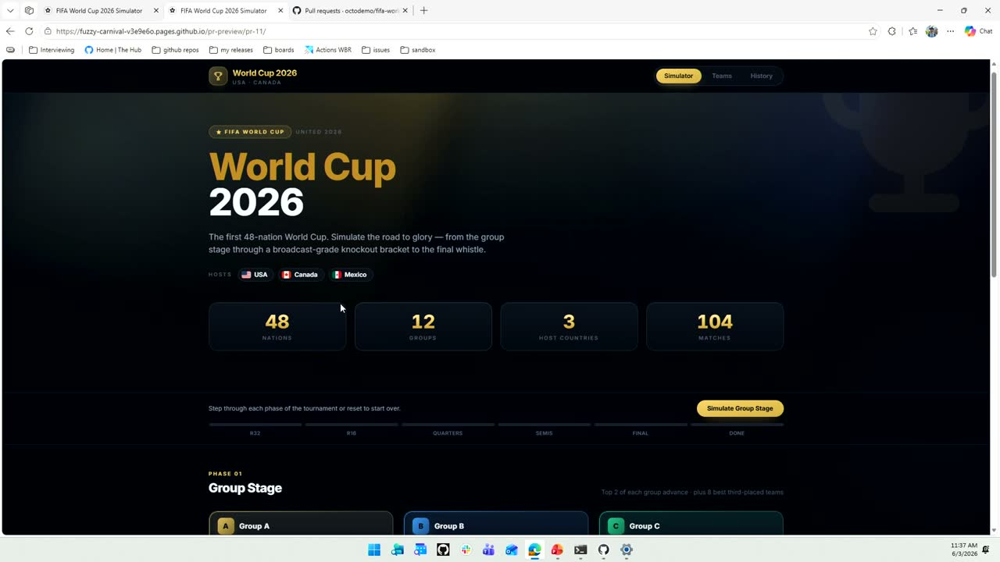
{kind=link}
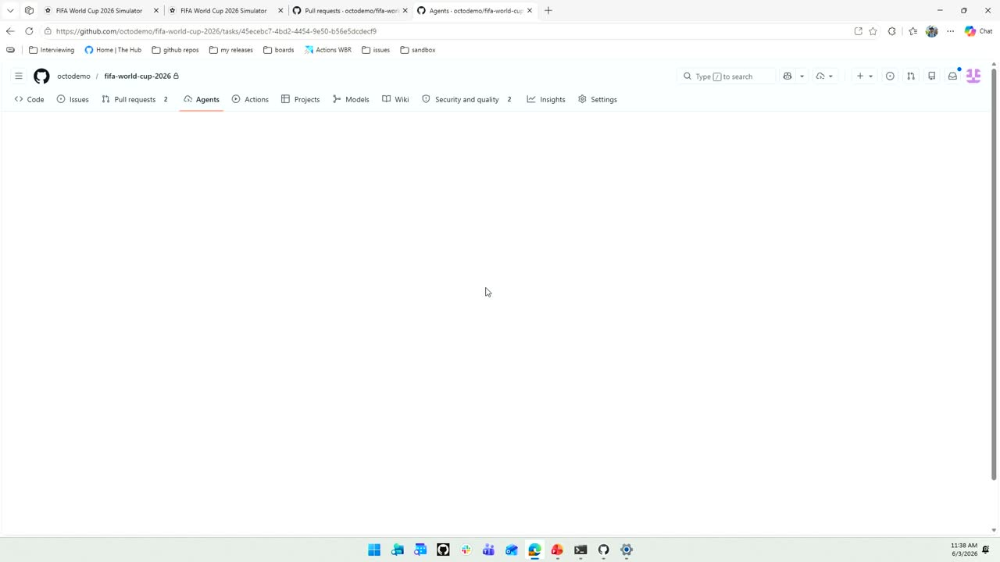
{kind=link}
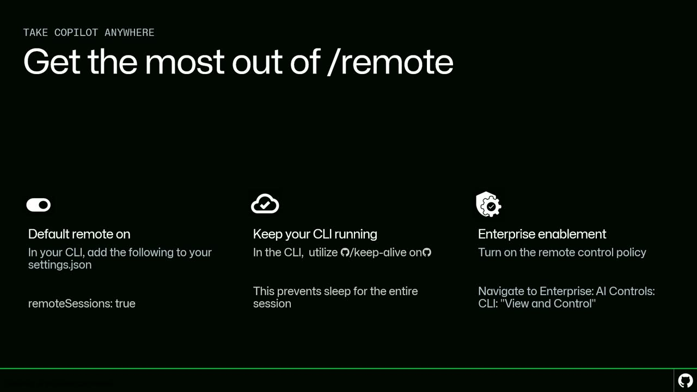
{kind=link}
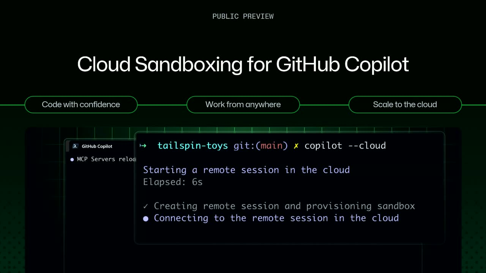
{kind=link}
{kind=link}
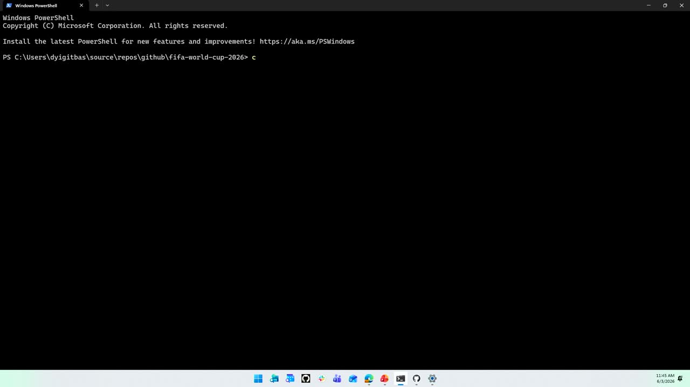
{kind=link}
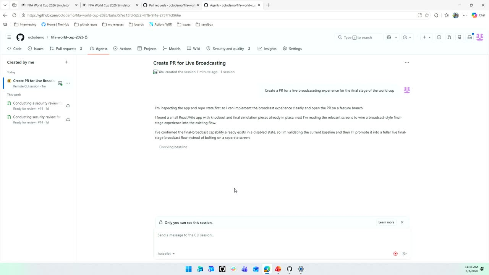
{kind=link}
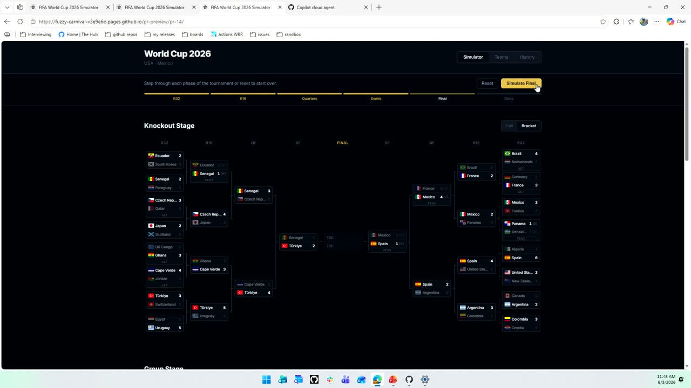
{kind=link}
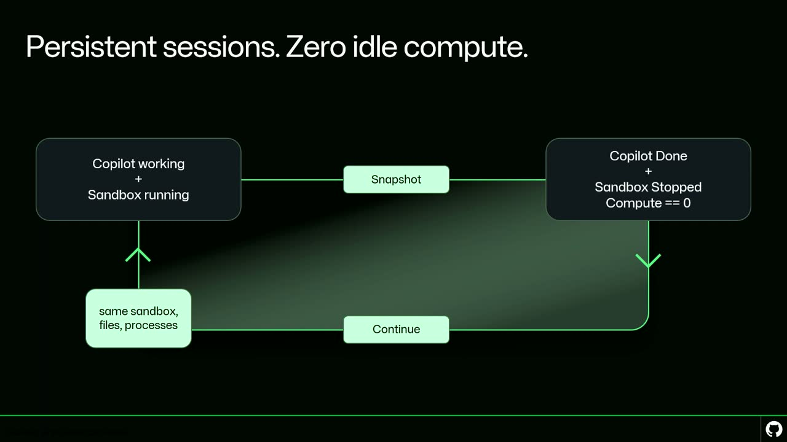
{kind=link}
{kind=link}
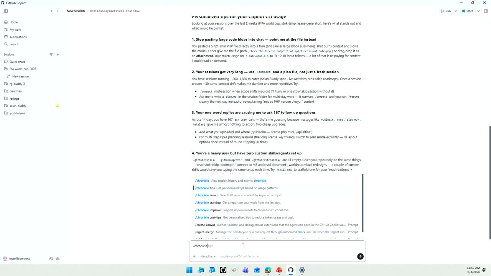
{kind=link}
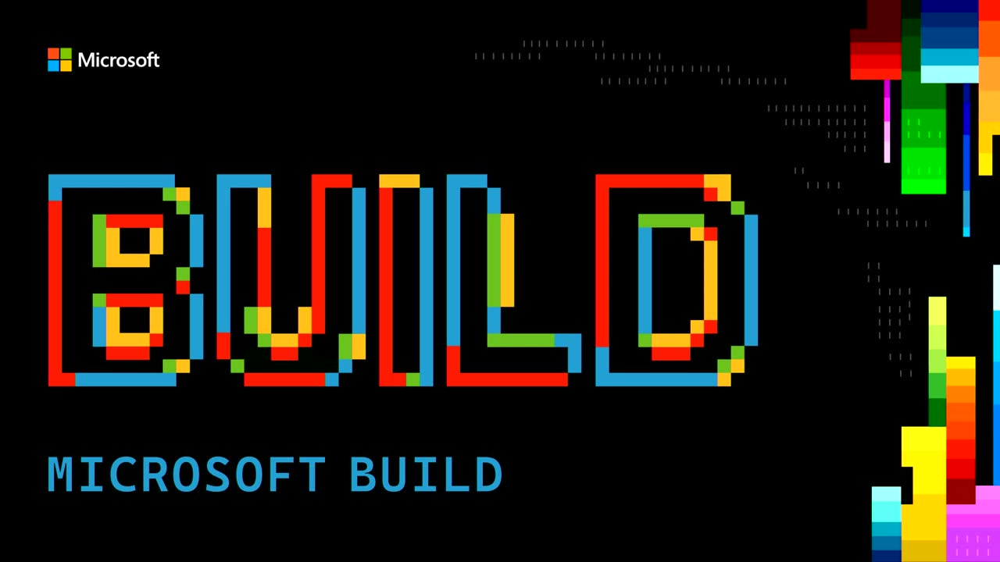
Transcript
Show / hide transcript (30,780 chars)
[00:00:02] Thank you for joining us, everybody. [00:00:03] Our next session is GitHub Copilot. [00:00:06] Anywhere from remote control CL is to cloud sandboxes with [00:00:10] Ellie and Denson, and the floor is now yours. [00:00:14] All right. [00:00:14] Can everyone hear me OK? [00:00:15] It's my first face microphone. [00:00:19] All right. [00:00:20] Wait, is my audio coming? [00:00:22] Should both our audios be coming? [00:00:24] I think we're good. [00:00:25] Can you guys hear me? [00:00:26] Can you hear Jennison? [00:00:27] Because I can't hear me. [00:00:29] No, OK, We need one more mic check. [00:00:32] Hello, Hello Ellie is more important than I am so. [00:00:38] All right, how's everyone doing? [00:00:40] We have a session pretty close to lunch, so we'll [00:00:43] try to keep it as entertaining as we can. [00:00:45] Today we're going to be talking about GitHub copilot anywhere. [00:00:48] So if you are here for that, you're in the [00:00:51] right spot. [00:00:51] And if you are here for something else, you're going [00:00:54] to be learning about taking GitHub copilot anywhere. [00:00:57] All right. [00:00:58] Well, Denizen and I wanted to start off with an [00:01:01] engaging first slide that would really grab all of your [00:01:04] attention. [00:01:05] So we thought what better way than a Copilot generated [00:01:08] slide of what we wanted to be talking about today. [00:01:11] So you can let me know if you think Copilot [00:01:14] did a good job. [00:01:16] But on a more serious note, one of the things [00:01:18] that is just undeniable about the current time right now [00:01:21] is that the pace of innovation has never been faster. [00:01:24] And that's really pushing the bounds for what is possible [00:01:27] for all of us to do in our day-to-day roles. [00:01:30] And with that comes the undeniable notion that your best [00:01:33] ideas don't always come from when you're sitting behind the [00:01:36] computer. [00:01:37] And according to Copilot, they might come from when you're [00:01:40] at the airport or on the train, or it looks [00:01:43] like the living room as well. [00:01:45] And So what we wanted to talk to you about [00:01:47] today is a little bit more about developer choice. [00:01:48] So not just how you work, but also where you [00:01:52] work and when you work. [00:01:57] So the first thing we're going to talk about today [00:02:00] is remote control sessions with GitHub Copilot. [00:02:03] And I'm hoping that by the end of this section [00:02:05] of the presentation, you all learn a couple things. [00:02:08] First, what remote control sessions are, how to use them, [00:02:11] when to use them, and how to get the most [00:02:14] out of those remote control sessions. [00:02:16] And I'll be doing a demo in a little bit [00:02:18] just to illustrate that. [00:02:22] But if you want to see an overview of everything [00:02:25] to know about remote control, I'll do that before I [00:02:28] jump into my demo. [00:02:29] So why don't you just give a brief overview of [00:02:32] what remote control is by just out of curiosity, Actually [00:02:35] by a show of hands, how many people have already [00:02:37] tried out the remote control feature with Copilot? [00:02:41] I see one hand. [00:02:42] All right, great. [00:02:43] Well, you will be an expert. [00:02:44] You can. [00:02:44] I see Louise in the back. [00:02:46] Two people. [00:02:47] I guess you should put your hands up too. [00:02:48] Four people. [00:02:48] I'm doing 2, but that's great because that's what we're [00:02:51] going to be talking about today. [00:02:52] So remote control lets you take your local work on [00:02:56] the go. [00:02:57] So you're taking the power of today. [00:02:59] I'll be demoing the CLI, but this applies to the [00:03:02] Copilot, the new Copilot app that we launched yesterday, Copilot [00:03:06] in VS Code, Copilot in Jetbrains as well. [00:03:09] And basically you can take your local session that's running [00:03:12] on your machine with you on the go, whether that's [00:03:15] github.com or your mobile device that I'll be showing. [00:03:20] Remote control also works with any project structure. [00:03:22] So today I'll be demoing remote control from a GitHub [00:03:25] repo. [00:03:26] But if you use an ADO repo, it works with [00:03:28] that. [00:03:29] Or if you have ACLI session that maybe doesn't have [00:03:31] a repository, you can still remote control that session. [00:03:36] And as I mentioned, I'll be doing from the CLI [00:03:38] today, but this works with most of the local clients [00:03:41] that you might have come to use with the Microsoft [00:03:43] and GitHub ecosystem. [00:03:46] All right, demo time. [00:03:47] So I don't know who was here in the previous [00:03:53] session, but thank you, Jennison. [00:03:58] We are big World Cup fans. [00:04:00] There was no there was no discussion with the previous [00:04:03] demo. [00:04:03] This was independent thinking as we have a lot of [00:04:05] World Cup fans. [00:04:06] I'm a big World Cup fan. [00:04:07] I hope. [00:04:08] Who's a fan of the World Cup? [00:04:09] Anyone looking? [00:04:10] Forward to it. [00:04:10] OK, so we have more people interested in the World [00:04:12] Cup than maybe remote control, but maybe by the end [00:04:14] we'll have some equal split. [00:04:16] So we built this app just for the sake of [00:04:18] demoing today and I'll just give you a quick walkthrough [00:04:22] of the app. [00:04:22] So I have basically I can stimulate the simulate the [00:04:26] group Sage. [00:04:28] So you can, I can see, I can click through [00:04:30] here. [00:04:30] I have a list of teams. [00:04:32] You might find out by the end of today what [00:04:35] team Dennison is rooting for. [00:04:37] Yeah. [00:04:38] Like if we look at like #20 there's Turkey or [00:04:40] Turkey should definitely be up at one or two. [00:04:43] It's currently in 20. [00:04:44] We'll have to fix that bug. [00:04:46] So we have a, we have a stats error. [00:04:49] A big stats error. [00:04:50] And then also just the history of the different teams [00:04:54] that have won, again, potential error in terms of. [00:04:58] Who? [00:04:58] Has one. [00:05:00] Yeah. [00:05:00] Exactly. [00:05:01] All right. [00:05:02] But anyway, you know, we're presenting here today. [00:05:04] We appreciate all of your time. [00:05:05] And I was thinking this app could probably look a [00:05:08] little bit nicer. [00:05:09] So I started working with Copilot on just adding a [00:05:13] little bit more pizzazz to the app and I'm going [00:05:16] to move my mouse. [00:05:18] Nope, I'm not. [00:05:20] We're going to one second. [00:05:24] All right, here's my CLI session where I'm making some [00:05:28] changes to make the UI look a little bit nicer. [00:05:31] And I'm actually going to pull up my PR here [00:05:35] so we can take a look at just exactly how [00:05:38] it looks, which way I don't want. [00:05:41] All right, so I have APR here that I already [00:05:44] started. [00:05:45] I'm going to just take a quick look at what [00:05:47] it looks like. [00:05:49] I think it looks a little bit nicer for all [00:05:51] of you. [00:05:51] We have some nice theming here, but I'm noticing a [00:05:54] bug. [00:05:55] USA and Canada. [00:05:57] I'm missing Mexico and the header as the host country, [00:06:00] And because we only have 25 minutes today, Dennison's going [00:06:04] to boot me from the stage. [00:06:06] So I got to take my work with me on [00:06:08] the go and fix this. [00:06:09] Now, unfortunately, I can't actually show you what it looks [00:06:12] like on my phone, but I'm going to show you [00:06:14] what I actually can do in order to take my [00:06:16] session with me on the go to fix this bug. [00:06:19] So I'm going to go back to my terminal here [00:06:22] and all I'm going to do is I'm going to [00:06:25] do remote on. [00:06:26] There's a couple other statuses here. [00:06:28] Remote off. [00:06:29] If I had started a remote session, right, Remote show [00:06:31] will show me if my active session is remote able. [00:06:34] So I'm going to do remote on. [00:06:36] And the first thing that you'll notice here is now [00:06:39] I have a link. [00:06:41] If I do control E, I'll also get a QR [00:06:44] code. [00:06:44] Now let's see how my phone does on the stage. [00:06:46] I have not practiced this part, but I'm going to [00:06:49] scan this QR code. [00:06:51] And I'm now live with this session in the GitHub [00:06:54] app. [00:06:55] If you can say it's a little bit far. [00:06:57] And what I'm going to do is I'm going to [00:07:00] ask Copilot in real time to up to update and [00:07:04] add Mexico to the header in my app. [00:07:08] And I'm going to go ahead and I'm going to [00:07:09] send it. [00:07:11] And as I send it, you're going to see here [00:07:14] that it updated in the CLI as well. [00:07:16] So what remote control does is it allows me to [00:07:19] take, as I mentioned, my local work with me on [00:07:22] the go and monitor and steer it in real time. [00:07:25] Any permissions requests that I need will show up on [00:07:28] my mobile phone or any Internet connected device. [00:07:31] I'll get to your question in one. [00:07:32] You have a question. [00:07:36] The is the GitHub app. [00:07:38] The GitHub app? [00:07:38] Yep. [00:07:39] But if you don't have the GitHub app or you're [00:07:42] just working in front of your computer, the other thing [00:07:45] that I can do is I can just go to [00:07:47] github.com and I can view this session here as well. [00:07:50] This is the exact CLI session that I was running [00:07:53] both on my phone and in the CLI. [00:07:56] So you can see here, same exact experience as I [00:08:01] have on the web now. [00:08:04] My local sessions are now appearing on github.com and are [00:08:07] appearing in the GitHub mobile app, but they're only viewable [00:08:09] to me. [00:08:10] So we're not changing anything about the permission structure. [00:08:13] If you do want to share your session with someone [00:08:15] that has also has access to that repo, that's certainly [00:08:17] an option for you, but by default, we're not changing [00:08:19] anything in the permission structure. [00:08:20] All right, I'm going to wrap it up quickly and [00:08:23] just give you some tips and tricks on how to [00:08:25] make the most out of your time working with remote. [00:08:30] How do I get this back? [00:08:36] All right, couple tips and tricks. [00:08:38] By default, remote controlled sessions are off. [00:08:41] So if you want to turn them on so all [00:08:43] of your local sessions are running remotely, you can go [00:08:46] into your settings, Jason, and just type remote sessions. [00:08:49] True. [00:08:49] And that means by default, all of your sessions will [00:08:52] now be steerable on the go. [00:08:55] Another thing is you want to keep your right now, [00:08:57] the way remote control works is that your your terminal, [00:09:01] your local machine needs to be online in order to [00:09:03] be able to remote your session. [00:09:05] Dennison in a second is going to talk a little [00:09:07] bit about how you can get around that. [00:09:08] So if you want to make sure that your session [00:09:11] stays online and doesn't go to sleep, you can do [00:09:14] keep alive on in the CLI or whatever local client [00:09:17] that you're using, whether that's the desktop app or VS [00:09:21] Coder Jetbrains. [00:09:22] And lastly, if you get your Copilot license through your [00:09:25] enterprise Oregon organization, you're going to want to work with [00:09:28] your enterprise admin to just turn on the policies that [00:09:30] you have access to this feature. [00:09:32] The feature you would want to use, you want to [00:09:35] turn on is remote control. [00:09:36] You want to set it to view and control. [00:09:38] Cool. [00:09:40] Lovely. [00:09:40] Ellie, can you guys still hear me? [00:09:43] Fantastic. [00:09:44] It is loud. [00:09:45] Let's give Ellie a round of applause. [00:09:49] I like everyone to look at us and when we [00:09:51] clap. [00:09:51] So that's really the the main intent. [00:09:54] But what Ellie showed is actually quite useful, right? [00:09:56] You have the ability to connect to your copilot sessions, [00:09:59] whether you're at your desk, you step away, grabbing a [00:10:02] coffee, grabbing lunch, and you have this continuous ability to [00:10:05] connect your copilot sessions and bring it with you everywhere. [00:10:09] A very, very powerful experience and really something that I [00:10:11] use almost everyday when I'm interacting with copilot. [00:10:15] But the natural next question that we asked ourselves is, [00:10:19] can Copilot have its own machine? [00:10:22] We were kind of thinking and we felt a little [00:10:24] like this. [00:10:25] What happens when Copilot actually has its own environment? [00:10:28] It's isolated. [00:10:29] And it can actually work in that ecosystem. [00:10:32] And that question really led to us thinking about how [00:10:35] do we enable this for users of Copilot. [00:10:38] And that's why we're really excited to introduce cloud sandboxing [00:10:41] Forget up Copilot now in public preview. [00:10:45] So at the core, every Copilot session that uses a [00:10:48] cloud sandbox gets its own isolated environment in the cloud. [00:10:53] So that means I can code with a lot more [00:10:55] confidence when I'm using Copilot. [00:10:57] It has its own ecosystem, and it's truly sandboxed literally [00:11:01] to the tools that you want to give it to [00:11:03] the file system, the network, or anything along those lines. [00:11:08] It also means that the session lives in the cloud, [00:11:10] so work from anywhere gets a new meaning. [00:11:13] It's not that my host machine has to be running. [00:11:15] The Copilot instance itself is running in the cloud so [00:11:18] I can connect to it. [00:11:19] Whether my laptop has disconnected from the the Internet, whether [00:11:23] my laptop shuts down, if I throw my laptop off [00:11:25] the balcony, it will still work. [00:11:27] Copilot still gets to go. [00:11:29] And the third aspect is some of us are ultra [00:11:33] agent maxors, right? [00:11:34] We want thirty of our agents working at the same [00:11:37] time, but our apps might be heavy and our local [00:11:39] resources just might not be enough. [00:11:42] And so for that, you can actually use a cloud [00:11:44] sandbox to allocate cloud resources and not overload your local [00:11:48] resources for your copilot instances. [00:11:52] So the best way to talk about this is to [00:11:54] actually see it in action. [00:11:55] So I would love to actually show how it looks [00:11:58] to actually create a copilot sandbox. [00:12:01] So I will switch back into our application. [00:12:08] Let's see. [00:12:12] OK, great. [00:12:14] So we have the World Cup app. [00:12:16] This is what Ellie was already showing. [00:12:18] We have the UI updates, the awesome UI updates that [00:12:21] Ellie had in a separate PR, but we're going to [00:12:24] come back to this application here now. [00:12:26] It's great. [00:12:27] There's a lot of stuff you can do. [00:12:28] You can simulate the rounds, but. [00:12:31] I don't think it's doing the World Cup justice, right. [00:12:33] I don't. [00:12:33] I don't want to just see results. [00:12:34] When I. [00:12:35] Click a button and I want to add a broadcasting [00:12:37] experience for the final specifically so we can see minute [00:12:40] by minute updates of the game. [00:12:42] And that's what we're going to build in the cloud. [00:12:45] But before I actually get to developing the cloud, I [00:12:47] want to kind of highlight what it means to use [00:12:50] a cloud sandbox versus using something like remote. [00:12:53] So Ellie had her session. [00:12:56] Her CLI session here. [00:12:57] That she was working on and she also showed us [00:13:00] that you can. [00:13:02] View that session on getup.com. [00:13:04] Right. [00:13:04] And I can steer this. [00:13:05] Session I can type here whatever I want. [00:13:07] And it'll actually work. [00:13:09] In that sense, but if I actually. [00:13:12] Go back into here and we see hello. [00:13:14] Here, I'm going to cancel that for now and I'm [00:13:17] just. [00:13:17] Going to mock basically that my laptop shuts. [00:13:20] Down and the best way I can do that is [00:13:22] I'm just going to close this session that we had [00:13:25] the tab. [00:13:27] So my host machine that was connected to dash dash [00:13:30] remote no longer. [00:13:31] Is active, so let's go back into the browser and [00:13:35] you'll notice that the session. [00:13:37] Is no longer interactable, right? [00:13:39] It's been shut down the host machine that was running [00:13:41] my. [00:13:41] Copilot session isn't. [00:13:43] Allowing me to steer. [00:13:44] Where I'm at anymore? [00:13:46] And that's really kind of the goal of remote. [00:13:49] But this time we're going to actually use a cloud [00:13:51] sandbox. [00:13:51] So let me go back into my CLI and we're [00:13:55] going to actually launch Copilot. [00:14:00] Not that we're going to launch Copilot, but we're going [00:14:04] to use the Dash Dash. [00:14:06] Cloud. [00:14:06] Flag when we're launching Copilot. [00:14:10] So what you'll notice is the first step that's going [00:14:13] to happen is hopefully it'll provision a cloud sandbox within [00:14:17] the first few seconds of initiating this and then we're [00:14:21] going to create a remote control session for the cloud [00:14:24] sandbox. [00:14:25] So the only thing that's actually changing here is where [00:14:28] does this session. [00:14:29] Run and in this. [00:14:29] Case it's running in the cloud. [00:14:33] So I'm going to ask you to create and. [00:14:36] This is really no different than using the CLI. [00:14:38] Locally, I get my experiences, I can plan, I can [00:14:41] go into autopilot and I'll. [00:14:42] Ask you to create. [00:14:46] Create APR for a live broadcasting experience. [00:14:53] Man typing live experience for the final stage of the [00:14:58] World Cup. [00:15:01] And then we're going to enable all. [00:15:02] So now this is working. [00:15:03] So to highlight really now what that means, right, let's [00:15:06] go back to GitHub. [00:15:08] And let's see that I can see this actual session [00:15:12] in my tabs. [00:15:15] So great. [00:15:16] Yeah. [00:15:16] So we have our. [00:15:17] PR again. [00:15:18] I can see it in the in github.com. [00:15:21] What's different now is I'm actually going to go back [00:15:23] into our. [00:15:24] Cloud working session and I'm going to close our tab. [00:15:31] But what? [00:15:31] Changes is I'll refresh the screen. [00:15:33] Our copilot session is still working because it's. [00:15:35] Hosted in the cloud. [00:15:37] So while that works, you might be wondering, OK, great, [00:15:40] I have a cloud environment but. [00:15:42] I don't want it to go off. [00:15:43] Rails even in the case of a cloud environment or [00:15:45] I want to have policies on on my. [00:15:47] Cloud environment as well. [00:15:49] And that's really where our cloud agent. [00:15:51] Policies come into play. [00:15:53] So if you go into your settings. [00:15:55] And you go into copilot and into cloud. [00:15:57] Agent, we're sharing the same policies that your Copilot cloud [00:16:00] agent uses for the sandbox environment that's being used in [00:16:03] the CLI in this case. [00:16:05] So you have your firewall rules, you have your recommended [00:16:08] allowance, your custom allowance. [00:16:09] These all apply to the sandboxes that are created when [00:16:12] you're scoped to a repository specifically. [00:16:17] But let's get into the more fun side of stuff. [00:16:19] Let's go into the. [00:16:20] PRS that we have and we have our enable live [00:16:25] World Cup broadcast and let's go ahead and preview our [00:16:31] experience. [00:16:33] So the most important. [00:16:34] Part of this session is actually now I'll take out [00:16:38] what we're about to watch, right. [00:16:40] So there's one team that matters in our simulation. [00:16:43] We're about to run through a simulation. [00:16:45] I got my jersey with me so I'm going to [00:16:47] simulate the group stages and again. [00:16:50] The only team. [00:16:51] That matters. [00:16:52] Is Turkey coming first in their? [00:16:53] Group so great. [00:16:55] Three wins. [00:16:56] We're going to go to the round of 32, another [00:16:59] fantastic Turkey win against Switzerland and against against again against [00:17:04] Uruguay. [00:17:06] Looks like Cape Verde went down to Turkey again. [00:17:09] And then we have. [00:17:10] Turkey versus Spain in the final. [00:17:12] So. [00:17:12] What we're actually testing now is if we. [00:17:14] Create, Click, Simulate, Final. [00:17:16] Will we get that? [00:17:17] Experience and great so copilot has added the simulation and [00:17:22] we're going to actually watch the World Cup final live [00:17:26] together and see what happens we've got a goal from [00:17:29] Kenan yield lose fantastic one zero 30th minute This is [00:17:33] live this is real not coded in. [00:17:36] We don't know who's going to win this game, but [00:17:38] I have a. [00:17:38] Feeling I have a good sense of who's going to [00:17:40] win. [00:17:43] 20 We love. [00:17:45] That we love that. [00:17:48] Wow, this is taking a while. [00:17:51] And three, zero, OK, I'm going to call this a [00:17:53] fantastic. [00:17:53] Win for Turkey and. [00:17:56] We'll see that Turkey. [00:17:57] Wins the World Cup and. [00:17:59] Now we can update that bug in the in our [00:18:01] history and make sure that Turkey is in there. [00:18:05] So coming back to our our little slides, the question [00:18:08] that you might be also wondering then is like, OK, [00:18:11] I have cloud environments, but how do they persist and [00:18:14] how does the cost in the billing actually work with [00:18:18] it, right. [00:18:19] So the advantage and the magic that's actually going around [00:18:21] with cloud. [00:18:22] Sandboxing is while. [00:18:23] Copilot is active and working. [00:18:26] A sandbox is running. [00:18:27] Now. [00:18:28] Once Copilot stops its work and it's kind of done [00:18:31] doing its job, we take an implicit snapshot of the [00:18:34] process and the disk of the of that sandbox. [00:18:38] And the the sandbox. [00:18:39] Goes into a stop state, the copilot is done and [00:18:42] your compute goes scales down to 0. [00:18:44] So you have no compute actively happening. [00:18:46] Now when you want to reinteract with your copilot session [00:18:49] and you have a follow up question, all you do [00:18:51] is you type back. [00:18:51] You say whatever you want to do. [00:18:53] And all we use. [00:18:54] That snapshot that we took and we resume the copilot [00:18:57] instance with the same sandbox, same files and same processes [00:19:01] that were. [00:19:01] Already active for that sandbox. [00:19:06] So just to wrap up right, there's really 2 new [00:19:08] ways that we've talked about with Ellie today. [00:19:10] There's our remote control sessions. [00:19:12] That's one way of working with Copilot. [00:19:14] It's using your machine, it's using local resources. [00:19:18] Your host is still required in that case, but it's [00:19:21] really helpful for our local iterations whenever you want to [00:19:24] kind of iterate on your, your active machine. [00:19:28] And we're introducing Cloud Sandbox. [00:19:29] Sessions which are bringing. [00:19:31] That's giving Copilot its own machine. [00:19:33] It's using isolated environments. [00:19:35] The host now becomes optional and you have a persistent [00:19:39] cloud workspace for copilot to work in. [00:19:42] Awesome. [00:19:46] And we wanted to just end with, can you guys [00:19:48] still hear me? [00:19:50] You can. [00:19:50] OK, great. [00:19:51] I wanted to just end with a quick demo in [00:19:53] the interest of time and just talk to you a [00:19:55] little bit about a feature that we call Chronicle. [00:19:58] So we've talked just now about different ways to run [00:20:01] sessions with Copilot, and I wanted to let you all [00:20:04] know that every session that you run with Copilot builds [00:20:07] a history that you can query. [00:20:09] And from that history, you can actually take actionable steps [00:20:13] to improve your working interactions with Copilot, whether that's creating [00:20:17] stand up updates, getting tips, improving your custom instructions. [00:20:21] I think we only have a couple minutes, so I'm [00:20:23] just going to pull up the desktop app quickly just [00:20:25] to show you a little bit about what I mean. [00:20:29] So if you haven't, if you haven't checked out the [00:20:32] new Copilot app, I highly recommend it. [00:20:35] I think Dennis and I use it all the time [00:20:37] in our day-to-day and I just wanted to show a [00:20:40] final session of what using Chronicle actually looks like and [00:20:45] how to get started with it. [00:20:47] If I can find the mouse to take me to [00:20:49] the other. [00:20:51] Oh, here it is. [00:20:52] Whoops, this way, what do I do? [00:20:55] Oh, there we go. [00:20:57] OK, so if you were to run Chronicle, which you [00:20:59] can run in the desktop app, in the CLI through [00:21:02] VS Code, through Jetbrains and on github.com, what Chronicle is [00:21:06] doing is it's indexing all of your sessions specific to [00:21:09] you. [00:21:09] So what you have access to across all of the [00:21:11] places that you might be creating Copilot sessions, again, whether [00:21:15] that's the CLI, whether that's the desktop app, whether that's [00:21:18] VS Copilot on VS Code or Jetbrains if you're using [00:21:21] Copilot Cloud Agent, if you're using Copilot code review and [00:21:24] allows you to get actionable tips on how to improve [00:21:27] working with Copilot. [00:21:28] So here what I did is I ran Chronicle tips [00:21:31] and Copilot gave me some helpful tips on how I [00:21:34] can make the most usage out of my working with [00:21:37] Copilot. [00:21:38] The way you're going to access this functionality is in [00:21:41] a session whether again whether what regardless of which client [00:21:45] you choose to use, you can just do slash chronicle. [00:21:49] And you can see here all the different options that [00:21:51] I have. [00:21:51] So I can get tips based on my usage patterns. [00:21:54] I can search across all of my sessions. [00:21:57] I can get a stands up report. [00:21:58] If your team does stand up, I can also get, [00:22:01] I'm going to zoom in a little bit. [00:22:05] Is that easier to see? [00:22:06] I can also get improvements on how to update my [00:22:10] custom instructions. [00:22:11] And Chronicle applies whether you're using a cloud sandbox or [00:22:14] you're using a Dash remote, right? [00:22:16] It's all of your Co. [00:22:17] Pilot all of your copilot sessions so as well as [00:22:20] cost tips. [00:22:21] So if you want tips and tricks on how to [00:22:23] reduce your token usage and cost, basically what we're trying [00:22:27] to do is turn your session history into a practical [00:22:30] source of guidance for when you're working with copilot. [00:22:34] And on that note, I want to just wrap up [00:22:36] by saying that, you know, we talked a little bit [00:22:39] about the beginning, how it's never been a more dynamic [00:22:41] time to be building. [00:22:43] And so we hope that some of these features are [00:22:45] helping you not only just how you work, but also [00:22:48] where you work and when you choose to work as [00:22:50] well. [00:22:51] Absolutely. [00:22:52] Thanks everyone. [00:22:53] Thanks y'all.